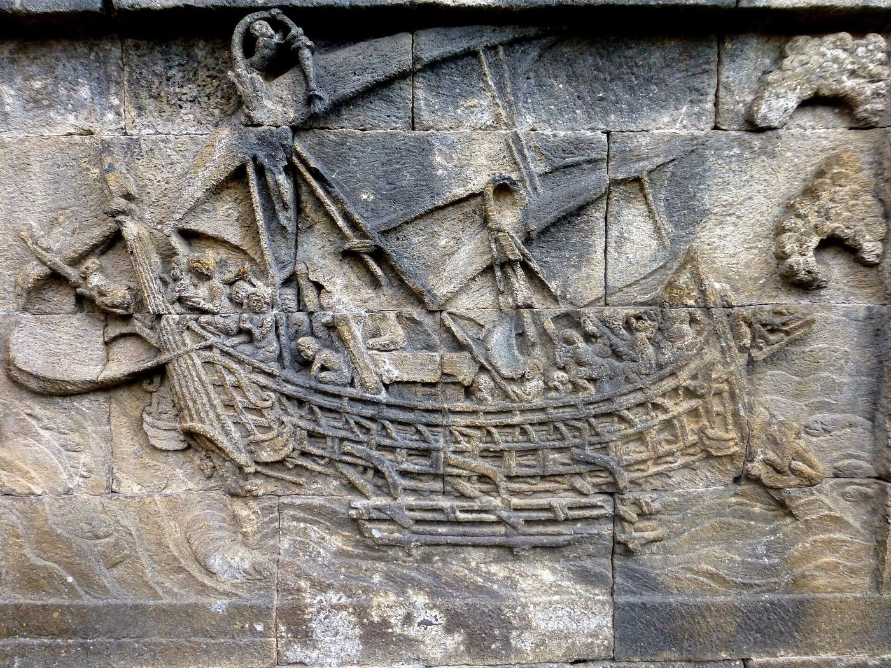

Chapter 16: India and Southeast Asia¶
Chapter Overview
From the early centuries CE, rulers across mainland and island Southeast Asia took up Sanskrit, Indic scripts, Hindu and Buddhist cults, Indian ideas of kingship and Indian literary forms, and used them for their own purposes. This chapter looks at how that happened: through traders, Brahmins and Buddhist monks, and above all through the choices of Southeast Asian elites. It surveys the evidence from Funan and Champa, Borneo and Java, Śrīvijaya, Angkor and Pagan, the Rāmāyaṇa traditions of the region and the Hindu culture of Bali. It treats “Indianisation” as a debated concept and stresses that the traffic ran both ways: Southeast Asian ships, sailors, spices and Buddhist patrons were as much a part of the story as Indian merchants.
Indian texts called the lands beyond the Bay of Bengal Suvarṇabhūmi (“land of gold”) and Suvarṇadvīpa (“island of gold”). Merchants in the Jātaka stories sail there to make their fortunes, and the Rāmāyaṇa’s survey of the eastern quarter names Yavadvīpa, probably Java. Ptolemy’s Geography (2nd c. CE) knows a “Golden Chersonese” (the Malay peninsula) and an island called Iabadiou, a Greek rendering of the same name (Coedès 1968; Wolters 1967). The names tell us what Indian merchants hoped to find, not how the inhabitants saw themselves, and the lands they referred to are hard to pin down.
The earliest contacts across the Bay, attested by beads, pottery and bronzes from the last centuries BCE, are treated in Chapter 11; the trade of the Straits between 600 and 1500, including Śrīvijaya’s commercial history and the Chola raid of 1025, in Chapter 12. This chapter is concerned with the cultural side of the relationship. Temple architecture is treated in more depth in Volume 16, Vāstu–Śilpa, and scripts in Volume 10, Śabda Vidyā.
16.1 “Indianisation”: A Debated Concept¶
The word “Indianisation” was made familiar by the French epigraphist George Coedès, whose survey of the early kingdoms of the region, first published in French in the 1940s, appeared in English in 1968 as The Indianized States of Southeast Asia. Coedès defined Indianisation as the spread of an organised culture founded on the Indian conception of kingship, marked by Hindu or Buddhist cults, the mythology of the Purāṇas and the norms of the Dharmaśāstras, and expressed in Sanskrit (Coedès 1968). He stressed that this did not involve Indian conquest. But he pictured it largely as a transfer from a more advanced culture to less developed ones, carried by Indian settlers, merchants and priests.
Earlier Indian nationalist writers had gone further. In the 1920s the Greater India Society in Calcutta, and historians such as R. C. Majumdar, wrote of “Indian colonies” in the Far East, by analogy with the colonies of the European powers. That picture has been abandoned. No Indian state ruled any part of Southeast Asia, there is no evidence of large-scale Indian settlement, and the Southeast Asian kingdoms were founded and governed by local people.
Debate: How should the Indic culture of Southeast Asia be described?
-
“Indianized states” (Coedès). Indian culture was carried by Indian merchants, Brahmins and settlers and adopted by local rulers, who thereby created states of a new type. The model emphasises the Indian source and the completeness of the transfer (Coedès 1968).
-
Localisation (Wolters). O. W. Wolters argued that the starting point must be the Southeast Asian societies themselves. Their leaders were “men of prowess” whose authority rested on personal achievement and spiritual power, and their polities were shifting circles of allegiance (maṇḍalas) rather than bounded states. Such leaders selected Indian materials that fitted ideas they already held, especially about divinely charged kingship, and reworked them so thoroughly that the result was local. Wolters called this process “localisation” (Wolters 1999).
-
The Sanskrit cosmopolis (Pollock). Sheldon Pollock described a “Sanskrit cosmopolis” extending from Afghanistan to Java between about 300 and 1300 CE. Within it, rulers who had no political link with one another used the same literary language and the same forms of royal praise poetry to express power. The cosmopolis spread without conquest, mass migration or a church; its participants joined it by choice. Pollock also noted that Sanskrit was used in Southeast Asia, as in India, for poetic and political expression, while practical records were written in local languages such as Old Khmer and Old Malay (Pollock 2006).
Most historians now treat the process as the selective adoption and adaptation of Indic forms by Southeast Asian elites, who often had their own reasons for wanting them. “Indianisation” is still used as a convenient label, but with these qualifications.
The debate matters for how the evidence is read. A Sanskrit inscription of a Javanese king is evidence that the king, or his court, valued Sanskrit and could find someone to compose in it. It is not evidence that the king, his subjects or the poet were Indians, or that the society around him resembled Indian society.
16.2 How Indic Culture Travelled¶
16.2.1 Merchants¶
Trade created the contacts. Ships crossing the Bay of Bengal had to wait in port for the change of the monsoon, and merchants stayed for months at a time in Southeast Asian harbours (Chapter 14). From the ninth century onward Tamil merchant associations left inscriptions in the region, at Takuapa on the Thai–Malay peninsula, at Barus in Sumatra and at Pagan in Burma, and in some ports they maintained temples of their own (Chapter 12). Merchants carried images, ritual objects and textiles, and connected Southeast Asian rulers with the ports and sanctuaries of India (Hall 1980; Ray 1994).
Merchants alone, however, could not have produced Sanskrit court poetry, temple consecration rituals or the specialised vocabulary of kingship. The Dutch historian J. C. van Leur argued in the 1930s that the decisive actors were Brahmins invited by Southeast Asian rulers, not traders, and most later historians have agreed that the impetus came from the courts (Wolters 1999).
16.2.2 Brahmins and Buddhist Monks¶
Chinese accounts of Funan preserve a foundation legend in which a man from overseas, called Hun Tian in the Chinese records, marries a local queen called Liuye (“Willow Leaf”) and founds the royal line. A later Chinese history adds a second founder figure, Kauṇḍinya, a Brahmin who came from India in the fifth century and reorganised the kingdom according to Indian customs; and a seventh-century Sanskrit inscription from My Son in Champa tells of the Brahmin Kauṇḍinya marrying Somā, daughter of a serpent (nāga) king. These are dynastic myths, not historical records. They are nevertheless revealing: rulers chose to trace their legitimacy to a union between a foreign Brahmin and a local ruler or spirit of the land (Coedès 1968).
Inscriptions confirm that Brahmins received gifts and served as priests and advisers at Southeast Asian courts, though some of those named in later inscriptions appear to have been local families who had acquired Brahmin learning and status. Buddhist monks moved along the same sea routes. The Kashmiri monk Guṇavarman preached in Java in the early fifth century before going on to China; Chinese pilgrims such as Yijing sailed by way of Śrīvijaya; and in the early eleventh century the Bengali monk Atiśa spent years studying in Suvarṇadvīpa under a Sumatran teacher, Dharmakīrti, before going on to Tibet (Sen 2003; Ray 1994). The last case is a reminder that learning flowed in both directions.
16.2.3 Southeast Asian Agency¶
Southeast Asians did not wait for Indians to come to them. Their ships carried much of the trade of the Bay (Chapter 13), their pilgrims and envoys travelled to India, and their kings endowed monasteries at Nālandā and Nāgapaṭṭinam. Inscriptions show rulers choosing among Śaiva, Vaiṣṇava and Buddhist cults and adapting them to local spirits, ancestors and sacred mountains. The Indic forms that took root were those that served the ambitions of local elites, and they were transformed in the process (Wolters 1999; Pollock 2006).
16.3 The Earliest Evidence¶
16.3.1 Funan and the Mekong Delta¶
Chinese envoys who visited the Mekong delta in the mid-third century CE described a polity they called Funan, with walled settlements, a king, taxes paid in gold, silver and pearls, and books and archives written in a script resembling that of the “Hu” (Central Asians or Indians). Its main port was probably Oc Eo, whose finds are described in Chapter 11; it lay on the route between the Bay of Bengal and southern China. The few Sanskrit inscriptions attributed to Funan date from the fifth and sixth centuries and name rulers with Sanskrit names ending in -varman (Coedès 1968; Hall 2011).
16.3.2 The Vo Canh Inscription¶
A Sanskrit inscription found at Vo Canh, near Nha Trang on the south-central coast of Vietnam, is often described as the oldest Sanskrit inscription in Southeast Asia. Dated on the basis of its script to about the third or fourth century CE, it records a donation by a ruler of the family of a king called Śrī Māra. Whether this ruler belonged to an early Cham polity or was a dependent of Funan is debated (Coedès 1968; Salomon 1998). An inscription of about the fourth century from Dong Yen Chau in central Vietnam was written in Old Cham; it is often regarded as the earliest surviving text in any Austronesian language, and it shows that the local language was being written in an Indic script almost as soon as Sanskrit was.
16.3.3 Mūlavarman at Kutai¶
At Muara Kaman on the Mahakam river in East Kalimantan (Borneo), seven stone pillars carry Sanskrit inscriptions in verse. They call themselves yūpas, the sacrificial posts of Vedic ritual, and record the gifts of a king named Mūlavarman to Brahmins. On palaeographic grounds they are dated to about 400 CE, the earliest inscriptions from the islands. Their genealogy is instructive. Mūlavarman was the son of Aśvavarman, described as the founder of the dynasty, and the grandson of Kuṇḍuṅga, a name that is not Sanskrit. The family appears to have been a local one that adopted Sanskrit names and Brahmanical ritual within two generations (Coedès 1968; Salomon 1998).
16.3.4 Pūrṇavarman in West Java¶
A group of Sanskrit inscriptions in West Java, near modern Bogor and Jakarta, names a king Pūrṇavarman of Tārumānagara. They are dated on palaeographic grounds to the fifth century. The Ciaruteun stone carries a pair of carved footprints that the inscription compares to the footprints of Viṣṇu; the Tugu inscription records the digging of a canal and a gift of cattle to Brahmins. Pūrṇavarman thus presented himself in the idiom of an Indian king: a patron of Brahmins, a builder of waterworks and a ruler whose power was likened to a god’s (Coedès 1968). Table 16.1 lists selected early inscriptions from the region.
| Inscription | Place | Date | Language and content |
|---|---|---|---|
| Vo Canh | South-central Vietnam | c. 3rd–4th c. CE | Sanskrit; donation by a ruler of the family of Śrī Māra |
| Dong Yen Chau | Central Vietnam | c. 4th c. CE | Old Cham; often regarded as the earliest Austronesian text |
| Yūpa inscriptions of Mūlavarman | Kutai, East Kalimantan | c. 400 CE | Sanskrit verse; gifts to Brahmins; three-generation genealogy |
| Inscriptions of Pūrṇavarman | West Java | 5th c. CE | Sanskrit; footprints likened to Viṣṇu’s; canal works; gifts to Brahmins |
| Kedukan Bukit | Palembang, Sumatra | 682 CE | Old Malay; dated in the Śaka era; expedition and foundation by the ruler of Śrīvijaya |
| Kalasan | Central Java | 778 CE | Sanskrit; temple to the Buddhist goddess Tārā founded under a Śailendra king |
| Nālandā copper plate of Devapāla | Bihar, India | mid-9th c. CE | Sanskrit; villages granted for a monastery built by the Śailendra king Bālaputradeva |
| Śivagṛha | Central Java | 856 CE | Old Javanese; foundation of a great Śiva sanctuary, generally identified with Prambanan |
16.4 Śrīvijaya¶
The kingdom known as Śrīvijaya, centred near Palembang in southeast Sumatra, is known from a small group of inscriptions of the 680s and from Chinese sources. The earliest, the Kedukan Bukit inscription found at Palembang, is dated in the Śaka year 604, equivalent to 682 CE. It is written in Old Malay, in a southern Indic script, with Sanskrit loanwords, and records that the ruler, called the dapunta hiyaṃ, set out on a sacred expedition (siddhayātrā) with an army and founded a settlement. Other inscriptions of the following years, at Palembang, on the island of Bangka and in the Sumatran interior, threaten those who betray the ruler with terrible curses, and one, at Talang Tuo (684), records the foundation of a park for the benefit of all beings in Buddhist terms (Coedès 1968; Wolters 1967). Their language is significant. Śrīvijaya’s rulers were Buddhists who patronised Sanskrit learning, but they addressed their subjects in Malay, which became the language of trade and diplomacy throughout the archipelago.
The Chinese monk Yijing gives the best contemporary picture of the place. He sailed from Guangzhou in 671, stayed some months at Śrīvijaya studying Sanskrit grammar, went on to India and studied for about ten years at Nālandā, and returned to Śrīvijaya, where he lived from the late 680s to 695 copying and translating texts. He reported that more than a thousand Buddhist monks lived in the walled city, studying and practising much as in India, and he advised Chinese monks bound for India to spend a year or two there first to learn the rules and the language (Yijing 1896; Sen 2003). Śrīvijaya was thus not a distant outpost of Indian learning but one of its centres.
O. W. Wolters explained the kingdom’s wealth by its role as the main entrepôt between the Indian Ocean and China, which is discussed in Chapter 12 (Wolters 1967). Its kings were also patrons of Buddhism in India. In the ninth century a ruler of Suvarṇadvīpa, Bālaputradeva, had a monastery built at Nālandā; the Nālandā copper plate of the Pāla king Devapāla records that, at the request of Bālaputradeva’s envoys, Devapāla granted villages for its upkeep. The plate describes Bālaputradeva as the grandson of a Śailendra king of Yavabhūmi (Java) (Coedès 1968; Sen 2003). In the early eleventh century a later Śailendra king of Śrīvijaya and Kaṭāha (Kedah) built a monastery at Nāgapaṭṭinam, endowed by the Chola kings.
Relations with the Cholas then broke down. In 1025 Rājendra I sent a naval expedition that raided Kaḍāram and the ports of Śrīvijaya, an episode known mainly from his Tamil meykkīrtti; it was a raid with debated motives, not a conquest, and it is discussed fully in Chapter 12.
16.5 Java: Borobudur and Prambanan¶
16.5.1 The Śailendras and Borobudur¶
In the second half of the eighth century a dynasty calling itself Śailendra (“lords of the mountain”) rose to power in Central Java. Its Sanskrit inscriptions reveal close links with eastern India. The Kalasan inscription of 778 records the foundation of a temple to the Buddhist goddess Tārā, and the Kelurak inscription of 782 records the installation of an image of Mañjuśrī by a teacher from Gauḍa (Bengal), Kumāraghoṣa. Both are written in a north Indian script of the kind then used in Bengal and Bihar, unlike the southern scripts of earlier inscriptions (Coedès 1968; Salomon 1998).
Borobudur, built in Central Java around 800 (construction probably spanned several decades from the late eighth century), is the largest Buddhist monument in Southeast Asia. It is a stepped structure built over a natural hill: square terraces lined with galleries of relief panels, rising to three circular terraces carrying perforated stūpas, each enclosing a seated Buddha, and a single large stūpa at the summit. A pilgrim circling upward passes reliefs illustrating the workings of karma, the life of the Buddha according to the Lalitavistara, jātaka and avadāna stories, and the pilgrimage of the youth Sudhana in the Gaṇḍavyūha. The texts are Indian; the selection, the architectural conception and the carving are Javanese, and nothing quite like Borobudur was built in India.
Among the reliefs are several ships, some fitted with outriggers (Figure 16.1). They are among the best visual evidence for the ships of the region in this period, and they show features of the Austronesian shipbuilding tradition, such as outriggers, that were not used on Indian ships (Manguin 1993). A modern replica based on the reliefs, the Samudra Raksa, sailed from Indonesia across the Indian Ocean to Africa in 2003–04. Its voyage shows what such a design could do, not what route ancient ships took (Chapter 13).


16.5.2 Prambanan¶
A few kilometres away stands the Śaiva temple complex of Prambanan (Loro Jonggrang), built in the mid-ninth century. Its three principal shrines are dedicated to Śiva, at the centre, and to Brahmā and Viṣṇu; facing them are shrines for their mounts. Reliefs on the balustrades of the Śiva and Brahmā temples narrate the Rāmāyaṇa, and those of the Viṣṇu temple the story of Kṛṣṇa. The Old Javanese Śivagṛha inscription of 856 describes the dedication of a great Śiva sanctuary, generally identified with Prambanan (Coedès 1968).
Older accounts attributed Borobudur and Prambanan to two rival dynasties, the Buddhist Śailendras and the Śaiva house of Sañjaya; many scholars now see one royal line whose members patronised different religions. Either way, ninth-century Central Java supported monumental Buddhist and Śaiva building side by side.
16.5.3 Later Java¶
After the tenth century the centre of Javanese power moved to East Java, where Old Javanese court poetry (kakawin), written in Indian metres on themes from the epics and Purāṇas, flourished. The Deśavarṇana (better known as the Nāgarakṛtāgama), completed by the poet Prapañca in 1365, describes the court of Majapahit (1293–c. 1527). The coastal rulers of Java adopted Islam in the fifteenth and sixteenth centuries, but the shadow theatre (wayang) with its epic repertoire survived the conversion.
16.6 The Mainland: Angkor, Champa and Pagan¶
16.6.1 Angkor¶
The Khmer kingdom of Angkor dates its foundation to 802, when, according to an inscription written about 250 years later (the Sdok Kak Thom inscription of 1052), Jayavarman II had himself consecrated as universal ruler (cakravartin) on the Kulen hills in a ritual performed by a Brahmin. The same inscription speaks of a cult of the devarāja. Coedès understood this as a cult of the divine king; others, notably Hermann Kulke, have argued that it was the cult of a protective deity of the kingdom, and the question remains open (Coedès 1968).
Angkor’s inscriptions illustrate Pollock’s distinction. Sanskrit inscriptions, often long and accomplished poems, praise kings and record religious foundations. Old Khmer inscriptions, frequently on the same stones, list the lands, rice fields, livestock and labourers assigned to temples. Among these were many knum, temple dependants whose status ranged from servants to people who were effectively slaves, a reminder that the temple economy rested on bound labour (Pollock 2006; Coedès 1968).
Angkor Wat, built for Sūryavarman II (r. 1113–c. 1150), is a temple dedicated to Viṣṇu. Its plan represents the cosmos, with the central tower as Mount Meru and the enclosing walls and moat as the mountain ranges and oceans around it. Its galleries carry long reliefs of the churning of the ocean of milk, the battle of Kurukṣetra and the battle of Laṅkā, together with a procession of Sūryavarman’s own army, identified by short Old Khmer labels. The iconography draws on Indian texts; the architecture, the planning and the sculptural style are Khmer. Later Angkorian kings turned to Mahāyāna Buddhism, notably Jayavarman VII (r. 1181–c. 1218), and by the fourteenth century Theravāda Buddhism, which reached the mainland through Sri Lanka and Burma, had become the religion of the Khmer and Thai kingdoms (Coedès 1968).
16.6.2 Champa¶
“Champa”, a name taken from Indian usage, covers a series of polities of Cham-speaking people on the central and southern coast of Vietnam, from the early centuries CE until the last was absorbed by the Vietnamese state in the nineteenth century; their ports lay on the route between the Straits and China. The religious centre of My Son, in a valley inland from Da Nang, began as a sanctuary of Śiva under the name Bhadreśvara, founded by a king Bhadravarman around 400; it holds the remains of brick temples built between the seventh and thirteenth centuries, with inscriptions in Sanskrit and Old Cham (Coedès 1968). At Nha Trang the temple of Po Nagar honours a local goddess, “lady of the realm”, identified in Sanskrit inscriptions with Bhagavatī, a clear case of an indigenous deity given an Indic identity. Most Cham today are Muslims, but a Cham community that follows a Hindu-derived religion survives in southern Vietnam.
16.6.3 Pagan¶
In Burma, the Pyu cities of the first millennium CE have yielded Buddhist texts in Pali and Sanskrit inscribed on gold and silver leaves. From the mid-eleventh century the kingdom of Pagan (Bagan), founded on the middle Irrawaddy by Anawrahta (r. 1044–1077), became a major Buddhist power. Its kings favoured Theravāda Buddhism in close contact with Sri Lanka, and its thousands of brick temples and stūpas, built between the eleventh and thirteenth centuries, combine forms known from eastern India with local developments. The Myazedi inscription of about 1113 is written in four languages, Pali, Mon, Pyu and Burmese, a fitting symbol of the kingdom’s mix of traditions. Burmese kings also sent missions to repair the Mahābodhi temple at Bodh Gayā, and a Tamil inscription at Pagan records a Vaiṣṇava temple of the Nānādeśi merchants (Coedès 1968; Hall 2011).
16.7 Languages, Scripts and Calendars¶
The scripts used in Southeast Asia from the earliest inscriptions onward derive from the Brāhmī scripts of southern India. They are often called “Pallava” scripts, but the label is misleading, since they were not confined to the Pallava kingdom and scholars now prefer to speak of late southern Brāhmī. From these early forms developed, over many centuries and with much local innovation, the scripts used today for Khmer, Thai, Lao, Burmese, Javanese, Balinese and several other languages. In the eighth and ninth centuries north Indian scripts were used for some Sanskrit inscriptions in Java and Sumatra, reflecting the links with Bengal and Bihar noted above (Salomon 1998).
Writing in an Indic script did not mean writing in an Indian language. Old Cham, Old Malay, Old Khmer, Old Javanese, Mon and Burmese were all written in Indic scripts within a few centuries of the first Sanskrit inscriptions, and they absorbed many Sanskrit and Pali words; Malay still uses bahasa (language), negara (state) and raja (king).
Indic systems of time-reckoning travelled with the scripts. Inscriptions of Champa, Cambodia, Sumatra and Java are dated in the Śaka era, which begins in 78 CE, using Indian month names, lunar days and, in many cases, astronomical details. In Java the Śaka era remained in use until 1633, when Sultan Agung of Mataram introduced a lunar calendar of Islamic type that continued its year count; in Bali the Śaka year is still used, and the Balinese new year, Nyepi, is observed as a day of silence. The mainland Buddhist kingdoms used an era beginning in 638 CE as well as Buddhist eras counted from the Buddha’s death. These systems sat alongside indigenous calendars, such as the 210-day pawukon cycle of Java and Bali, which is not of Indian origin. Indian astronomy in Southeast Asia is treated in Volume 12, Khagola Jyotiṣa.
16.8 The Rāmāyaṇa in Southeast Asia¶
No Indian work was more widely adapted in Southeast Asia than the story of Rāma. It appears in temple reliefs at Prambanan (ninth century) and Angkor Wat (twelfth century), in court poetry, in dance and shadow theatre, and in oral tradition. The Southeast Asian versions do not derive simply from Vālmīki. The Old Javanese kakawin follows a later Sanskrit poem, Bhaṭṭi’s Rāvaṇavadha (the Bhaṭṭikāvya), closely in its earlier cantos; other versions draw on Tamil, Jain or popular retellings, and each tradition has added episodes and characters of its own (Richman 1991). Table 16.2 lists some of the main written versions.
| Work | Language and region | Approximate date |
|---|---|---|
| Kakawin Rāmāyaṇa | Old Javanese; Java | 9th–10th c. |
| Reamker (Rāmakerti) | Khmer; Cambodia | earliest parts c. 16th–17th c. |
| Hikayat Seri Rama | Malay; Malay world | known from manuscripts of the 17th c. onward |
| Ramakien | Thai; Thailand | standard version composed under King Rama I, 1797 |
| Phra Lak Phra Lam | Lao; Laos | date uncertain |
The variety is the point. In the Thai Ramakien Hanumān is a worldly and amorous hero; in the Malay Hikayat Seri Rama, written for a Muslim audience, Rāvaṇa receives his kingdom by the favour of Allah. The Rāma story was not a fixed Indian text received intact but a narrative that every court and community retold in its own way.
16.9 Bali¶
Bali is the one region of island Southeast Asia where a religion of Indic origin remained the faith of the majority after the spread of Islam. Balinese religion combines the worship of Śiva, Buddhist elements, and the veneration of ancestors, local deities and the sacred mountain Gunung Agung. Brahmin high priests (pedanda) recite Sanskrit hymns and formulas in their rituals, many of them preserved in Bali in forms not known in India; the island’s literature was long written in Old Javanese and Balinese on palm leaf. Bali’s links were above all with Java, whose courtly culture it absorbed over many centuries, rather than directly with India (Geertz 1980).
Balinese society has a hereditary hierarchy that borrows the vocabulary of varṇa (brahmana, satria, wesia and the commoner sudra), but it differs greatly from Indian caste in its rules; Clifford Geertz’s study of the nineteenth-century Balinese state shows how titles of this kind were bound up with temple ritual and royal display (Geertz 1980). In the twentieth century Balinese reformers, seeking recognition from the Indonesian state, reshaped their tradition as a form of Hinduism and drew more directly on Indian texts. Bali is not a “living museum” of ancient India but a tradition with its own long history, in which Indian elements have been repeatedly reinterpreted.
16.10 Flows in Both Directions¶
The story told so far could be read as a one-way transfer from India to Southeast Asia. It was not. Southeast Asian ships, built with planks edge-joined by wooden dowels and fitted with lashed internal frames, were sailing the South China Sea and the Bay of Bengal by the early centuries CE; Chinese texts describe large ships of the kunlun (southern) peoples carrying hundreds of passengers (Manguin 1993). Austronesian-speaking seafarers from the islands crossed the whole Indian Ocean to settle Madagascar, probably in the second half of the first millennium CE; the Malagasy language is most closely related to languages of southern Borneo (McPherson 1993).
Some of the most valued goods of the Indian Ocean came from Southeast Asia. Cloves grew only in a few islands of northern Maluku, and nutmeg and mace only in the tiny Banda islands, in eastern Indonesia. Indonesian traders carried them westward to Java and the Straits, where they entered the networks that took them to India, the Middle East and eventually Europe. Camphor from Barus in Sumatra, benzoin and other resins, sandalwood from Timor, tin from the Malay peninsula, gold and aromatic woods went the same way (Chapter 12). In return Indian cotton cloth became an essential good in Southeast Asian exchange and ceremony: Gujarati and Coromandel textiles were traded for spices, and some, kept as heirlooms in eastern Indonesia, have been dated to the thirteenth and fourteenth centuries (Guy 1998).
The traffic in ideas was also two-way. Southeast Asian rulers built and endowed monasteries in India, Indian monks studied in Sumatra, and the Buddhist art of Java and Burma influenced that of eastern India as well as drawing on it. From the thirteenth century Islam reached the region along the same sea routes, carried in part by Gujarati, Tamil and Bengali Muslim merchants alongside Arabs and Persians, and Malacca and the ports of the archipelago became Muslim centres in their own right (Chapter 12).
The links between India and Southeast Asia thus show how culture could move in the pre-modern world without empire. What resulted was not a copy of India but a range of distinctive civilisations, Khmer, Javanese, Cham, Burmese, Malay and Balinese, each of which made the borrowed forms its own.
Further Reading¶
Coedès (1968) remains the standard narrative of the early kingdoms and their inscriptions, though its framework is now questioned. Wolters (1999) sets out the localisation approach, and Pollock (2006) the idea of the Sanskrit cosmopolis. On Śrīvijaya and early trade, see Wolters (1967) and Hall (2011); on Buddhist networks, Ray (1994) and Sen (2003). Manguin (1993) is the key study of Southeast Asian ships, Salomon (1998) surveys the inscriptions and scripts, and Richman (1991) introduces the many tellings of the Rāma story.